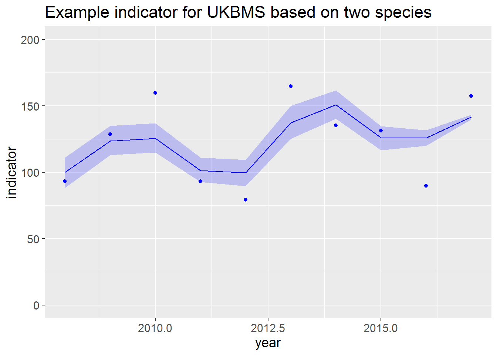

Source trend functions required that you can download from this link.
Read in collated indices for two species and filter to one BMS
bms <- "UKBMS"
co_index <- rbind(readRDS("./bms_workshop_data/Maniola_jurtina_co_index_boot.rds"),
readRDS("./bms_workshop_data/Polyommatus_icarus_co_index_boot.rds"))
co_index <- co_index[BMS_ID == bms]
co_index## BOOTi M_YEAR NSITE NSITE_OBS COL_INDEX BMS_ID SPECIES
## 1: 0 2008 155 154 343.00258 UKBMS Maniola jurtina
## 2: 0 2009 216 215 316.96054 UKBMS Maniola jurtina
## 3: 0 2010 231 228 232.68168 UKBMS Maniola jurtina
## 4: 0 2011 232 228 273.07411 UKBMS Maniola jurtina
## 5: 0 2012 264 262 350.30579 UKBMS Maniola jurtina
## ---
## 10016: 500 2013 143 169 84.67527 UKBMS Polyommatus icarus
## 10017: 500 2014 150 163 57.17384 UKBMS Polyommatus icarus
## 10018: 500 2015 146 202 49.50536 UKBMS Polyommatus icarus
## 10019: 500 2016 139 158 26.61983 UKBMS Polyommatus icarus
## 10020: 500 2017 148 198 59.65347 UKBMS Polyommatus icarusConvert to log 10 collated indices (TRMOBS)
co_index[, LOGDENSITY:= log(COL_INDEX)/log(10)][, TRMOBS := LOGDENSITY - mean(LOGDENSITY) + 2, by = .(SPECIES, BOOTi)]
co_index## BOOTi M_YEAR NSITE NSITE_OBS COL_INDEX BMS_ID SPECIES
## 1: 0 2008 155 154 343.00258 UKBMS Maniola jurtina
## 2: 0 2009 216 215 316.96054 UKBMS Maniola jurtina
## 3: 0 2010 231 228 232.68168 UKBMS Maniola jurtina
## 4: 0 2011 232 228 273.07411 UKBMS Maniola jurtina
## 5: 0 2012 264 262 350.30579 UKBMS Maniola jurtina
## ---
## 10016: 500 2013 143 169 84.67527 UKBMS Polyommatus icarus
## 10017: 500 2014 150 163 57.17384 UKBMS Polyommatus icarus
## 10018: 500 2015 146 202 49.50536 UKBMS Polyommatus icarus
## 10019: 500 2016 139 158 26.61983 UKBMS Polyommatus icarus
## 10020: 500 2017 148 198 59.65347 UKBMS Polyommatus icarus
## LOGDENSITY TRMOBS
## 1: 2.535297 2.013024
## 2: 2.501005 1.978731
## 3: 2.366762 1.844488
## 4: 2.436281 1.914007
## 5: 2.544447 2.022173
## ---
## 10016: 1.927757 2.254929
## 10017: 1.757197 2.084370
## 10018: 1.694652 2.021825
## 10019: 1.425205 1.752378
## 10020: 1.775636 2.102809Next we calculate and plot the indicator, where the confidence interval is based on the bootstraps
First we generate the indicator for real data
## year indicator ind_gam0 SMOOTH NSPECIES
## 1 2008 93.06434 63.45042 100.00000 2
## 2 2009 128.66868 78.32167 123.43759 2
## 3 2010 159.79842 79.71374 125.63153 2
## 4 2011 93.27168 64.26747 101.28769 2
## 5 2012 79.35512 63.13894 99.50909 2
## 6 2013 164.67445 87.10999 137.28827 2
## 7 2014 135.27982 95.79242 150.97207 2
## 8 2015 131.30396 79.97811 126.04818 2
## 9 2016 89.99077 79.85997 125.86200 2
## 10 2017 157.60336 89.84621 141.60064 2Then generate an indicator for each bootstrap
## num [1:10, 1:500] 59.9 73.6 75 60.9 61.7 ...
## - attr(*, "dimnames")=List of 2
## ..$ : NULL
## ..$ : chr [1:500] "1" "2" "3" "4" ...## 1 2 3 4 5
## [1,] 59.94336 63.03045 65.00111 63.97033 66.23381
## [2,] 73.55726 77.28879 79.18544 78.92274 83.27691
## [3,] 74.97925 78.57417 79.19096 80.36084 85.12711
## [4,] 60.88879 63.89199 61.36524 65.10461 68.43662
## [5,] 61.72164 62.75340 58.76827 62.95547 63.94505
## [6,] 87.33930 89.17058 84.65269 86.04877 87.39197
## [7,] 96.05617 99.77533 96.20685 95.91916 98.09845
## [8,] 79.92003 84.19464 82.31011 80.30745 81.79870
## [9,] 79.69771 82.81265 82.23267 80.10832 80.82010
## [10,] 89.77988 90.08617 90.71027 89.64004 89.36373Now we add a confidence interval to the indicator based on quantiles from the bootstrapped indicators
## year indicator ind_gam0 SMOOTH NSPECIES LOWsmooth1 UPPsmooth1
## 1 2008 93.06434 63.45042 100.00000 2 88.14009 111.0803
## 2 2009 128.66868 78.32167 123.43759 2 112.91961 134.9132
## 3 2010 159.79842 79.71374 125.63153 2 114.83919 136.8903
## 4 2011 93.27168 64.26747 101.28769 2 92.73150 110.9626
## 5 2012 79.35512 63.13894 99.50909 2 89.62639 109.2745
## 6 2013 164.67445 87.10999 137.28827 2 125.17660 149.9729
## 7 2014 135.27982 95.79242 150.97207 2 140.38601 161.6547
## 8 2015 131.30396 79.97811 126.04818 2 116.72898 134.7303
## 9 2016 89.99077 79.85997 125.86200 2 120.03092 131.7026
## 10 2017 157.60336 89.84621 141.60064 2 139.70652 143.4271Plot the indicator
ggplot(msi, aes(year, indicator))+
theme(text = element_text(size = 14))+
geom_ribbon(aes(ymin = LOWsmooth1, ymax = UPPsmooth1), alpha=.2, fill = "blue")+
geom_point(color = "blue")+
geom_line(aes(y = SMOOTH), color = "blue")+
ylim(c(0, max(200,max(msi$UPPsmooth1))))+
ggtitle(paste("Example indicator for", bms, "based on two species"))
Calculate the indicator trend including confidence interval from the bootstraps
## minyear maxyear nboot_lt rate_lt rate_lt_low rate_lt_upp pcn_lt pcn_lt_low
## 1 2008 2017 500 1.018977 1.017446 1.04204 18.43512 16.84273
## pcn_lt_upp TrendClass_lt
## 1 44.86399 Moderate increase